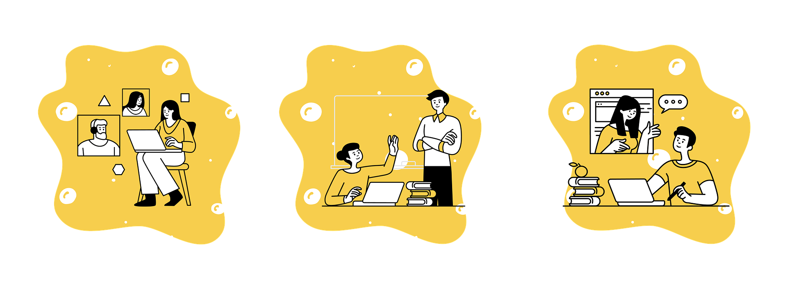

GCSE vs A-Level: What Changes?
Understand the key differences between GCSEs and A-Levels — and how to adapt to succeed in the next stage of your academic journey.
1. Depth Over Breadth
GCSEs cover a wide range of subjects, often 8–10 or more. A-Levels narrow this to just 3 or 4 subjects, but with **much greater depth and complexity**. You’re expected to master content at a much higher level.
2. Independent Learning
At A-Level, teachers provide less step-by-step guidance. You're expected to take more **responsibility for reading, revision, and time management**. Building strong study habits is essential.
3. Increased Workload
A-Level students often report a significant **jump in workload** — not just more content, but also more critical thinking, essay writing, and exam technique. Planning ahead is key.
4. Exam Style and Difficulty
GCSEs test foundational knowledge, often with direct questions. A-Levels require **analysis, evaluation, and application** of knowledge in new contexts. Past paper practice becomes more important.
5. Impact on University & Career
Your A-Level grades directly influence your university offers or career opportunities. Choosing subjects you enjoy — and that align with future goals — will help you stay motivated.
6. Adapting Successfully
- Choose subjects that match your strengths and interests
- Develop independent study routines early on
- Use planners, flashcards, and spaced repetition tools
- Ask for help when needed — don't fall behind
Transitioning from GCSEs to A-Levels can be a challenge, but with the right mindset and tools, it becomes an opportunity to grow academically and personally.
🎓 Need a head start? Our A-Level tutors offer structured support to help you adjust smoothly. Infoe_llite@yahoo.comContact us t to learn more.
← Back to Blog